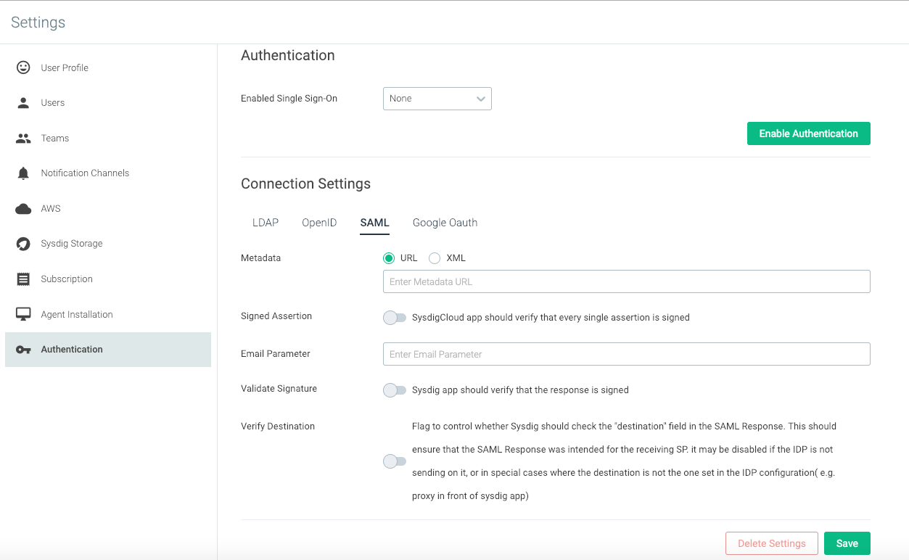

SAML (SaaS)
Note
This guide is specific to cloud-based (SaaS) Sysdig environments. If you are configuring an On-Premises Sysdig environment, refer to SAML (On-Prem) instead.
SAML support in the Sysdig platform allows authentication via your choice of Identity Provider (IdP).
The Sysdig platform ordinarily maintains its own user database to hold a username and password hash. SAML instead allows for redirection to your organization's IdP to validate username/password and other policies necessary to grant access to Sysdig application(s). Upon successful authentication via SAML, a corresponding user record in the Sysdig platform’s user database is automatically created, though the password that was sent to the IdP is never seen nor stored by the Sysdig platform.
This section describes how to integrate and enable SAML with both Sysdig Monitor and Sysdig Secure.
For specific IdP integration information, refer to:
See also Caveats
Basic Enablement Workflow
Step | Options | Notes | ||
|---|---|---|---|---|
1. Know which IdP your company uses and will be configuring. | These are the IdPs for which Sysdig has performed detailed interoperability testing and confirmed how to integrate using their standard docs. If your IDP is not listed, it may still work with the Sysdig platform. Contact Sysdig Support for help. | |||
2. Decide the login flow you want users to experience (choose from three options): | Click SAML button and enter a company name | From app.sysdigcloud.com or secure.sysdig.com > page to enter company name.
| ||
Type/bookmark a URL in browser | Monitor: https://app.sysdigcloud.com/api/saml/ | |||
Log in from an IdP interface | The individual IdP integration pages describe how to add Sysdig to the IdP interface. You will need your Sysdig customer number on hand. | |||
3. Perform the configuration steps in your IdP interface and collect the resulting config attributes. | Collect metadata URL (or XML) and test it. If you intend to configure IDP-initiated login flow, have your Sysdig customer number on hand. It will be referenced in later configuration steps as | |||
4 a. Log in to Sysdig Monitor or Sysdig Secure 4 b. Repeat process for the other Sysdig product, if you are using both Monitor and Secure. | You will enter a separate redirect URL in your IdP for each product; otherwise the integration processes are the same. |
Administrator Steps
Configure IdP
Select the appropriate IdP from the list below, and follow the instructions:
Enable SAML in Settings
To enable baseline SAML functionality:
Enter SAML Connection Settings
Log in to Sysdig Monitor or Sysdig Secure as administrator and select
Settings.
Select
Authentication.Select the
SAMLtab. Enter the relevant parameters (see table below) and click
Save.
Connection Setting | Options | Description | Sample Entry |
|---|---|---|---|
Metadata | URL | The URL provided at the end of the IdP configuration steps. | |
XML | An option that can be used for an IdP that doesn't support extracting metadata XML via URL. | ||
Signed Assertion | off/on | Should Sysdig check for assertions signed in responses (to assist in validating correct IdP). | ON |
Email Parameter | Name of parameter in the SAML response for user email ID. Sysdig uses this to extract the user's email from the response. | ||
Validate Signature | off/on | Sysdig backend should verify that the response is signed. | ON |
Verify Destination | off/on | Flag to control whether Sysdig should check the "destination" field in the SAMLResponse. Recommend ON, as a security measure. May be OFF in special cases, such as a proxy in front of the Sysdig back end. | ON |
Select SAML for SSO
Select
SAMLfrom theEnabled Single Sign-OndropdownClick
Save Authentication.Repeat entire enablement process for Sysdig Monitor or Sysdig Secure, if you want to enable on both applications.
User Experience
As noted in the SAML (SaaS)#Basic Enablement Workflow above, you can offer users three ways to log in with a SAML configuration:
They can begin at the Sysdig SaaS URL and click the SAML button.
Monitor: app.sysdigcloud.com or Secure: secure.sysdig.com
They will be prompted to enter a Company Name, so the Sysdig platform can redirect the browser to your IdP for authentication.

You can provide an alternative URL to avoid the user having to enter a company name, in the format:
Sysdig Monitor: https://app.sysdigcloud.com/api/saml/
COMPANY_NAMESysdig Secure: https://secure.sysdig.com/api/saml/
COMPANY_NAME?product=SDSYou can configure an IdP-initiated login flow when configuring your IdP. The users then select the Sysdig application from your IDP's app directory and do not browse directly to a Sysdig application URL at all.
Note
Users that complete their first successful SAML login to Sysdig Secure may receive the error message "User doesn't have permission to login in Sysdig Secure". This is because only members of the Secure Operations team are permitted access to Sysdig Secure, and newly-created logins are not in this team by default. Such a user should contact an Administrator for the Sysdig environment to be added to the Secure Operations team.
Environments that wish to have all users access Secure by default could use this sample Python script to frequently "sync" the team memberships.
See Developer Documentation for tips on using the sample Python scripts provided by Sysdig.
See also User and Team Administration for information on creating users.
Caveats
SAML Assertion Encryption/Decryption is not currently supported.
SAML Single Logout is not supported. Therefore, users should take care to log out directly from Sysdig application(s).
Basic Enablement Workflow
Administrator Steps
Configure IdP
Enable SAML in Settings
Enter SAML Connection Settings
Select SAML for SSO
User Experience
Caveats